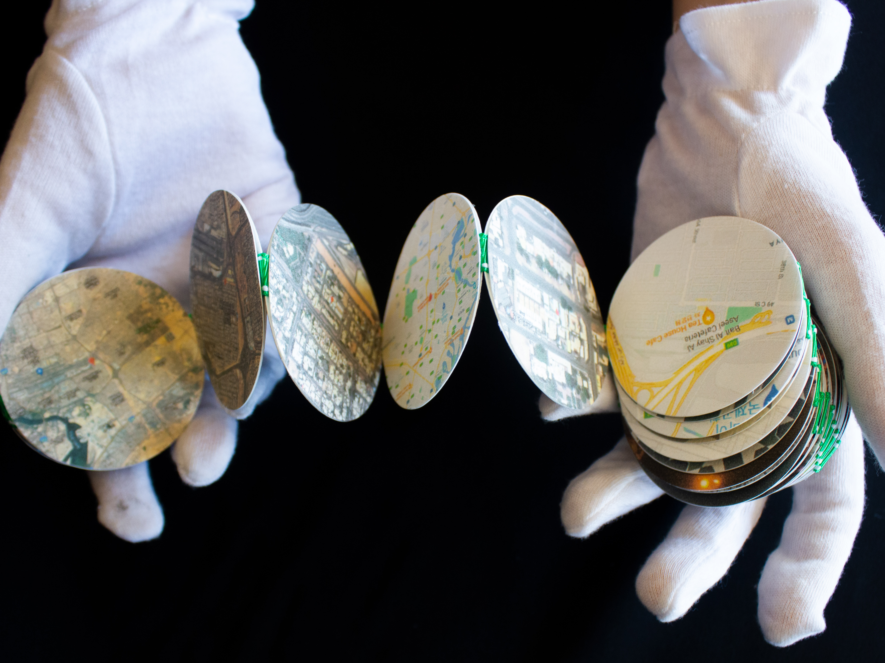

프란시스코
파라타
책

디지털 프린팅, 130 x 58 mm, 2021.
코로나 시대, 음식으로 여행하기 워크숍은 8주간 비대면으로 진행되었다. 두바이에 거주하는 파트너, Afra Ashraf와 나는 각자가 소개하는 음식과 장소에 대한 정보를 오직 온라인으로만 주고받을 수밖에 없는, 매우 제한적인 상황에 놓였다. 하지만 이러한 과정이 곧 음식과 장소를 통해 문화를 이해하는 간접 경험이었다. Afra가 넘겨준 음식은 브리또를 닮은 Francisco Paratha(프란시스코 파라타)와 이를 사 먹을 수 있는 장소 Bait Al Shay(카페테리아)였다. 가보지 못한 장소에서 판매하는, 먹어보지 못한 음식을 이해하고 알아가기 위해 Afra와 온라인으로 소통하였고 이 과정이 곧 간접 경험이었다. 이렇게 온라인으로 전달 받은 리소스들에 집요한 추적과 관찰을 더해 비대면 경험의 여정을 그렸다. 크게 음식 책과 장소 책으로 제작하였고, 책의 모양은 Francisco Paratha를 닮은 원형이며 아코디언 형태이다. 책은 양면으로 되어 있고 앞면에는 여정과 과정을, 뒷면에는 각각 음식과 장소에서 발견한 색, 글자, 질감, 장면들을 담았다. 마지막으로 음식 책과 장소 책을 한데 포장하여 마치 포장된 Francisco Paratha의 형상을 하고 있다.